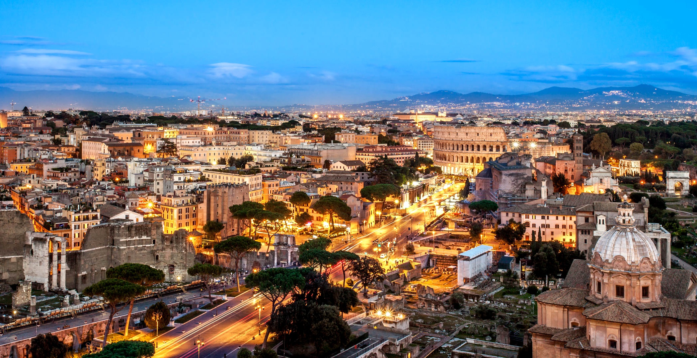
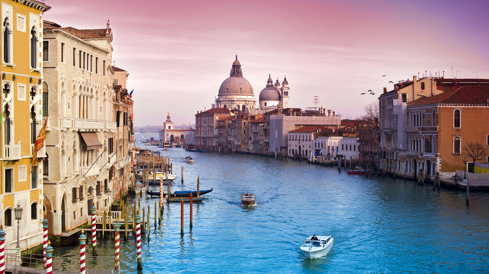

Destinos
España
Madrid
Capital de España


Madrid es la capital central de España con elegantes bulevares y amplios parques muy cuidados, como el Buen Retiro. Es famosa por sus ricas colecciones de arte europeo, con obras de Goya, Velázquez y otros maestros españoles en el Museo del Prado. El corazón del antiguo Madrid de los Habsburgo es la Plaza Mayor bordeada de pórticos y cerca se encuentra el Palacio Real y la Armería, que exhiben arsenales históricos.
Barcelona


Barcelona, la capital cosmopolita de la región de Cataluña en España, es conocida por su arte y arquitectura. La fantástica iglesia de la Sagrada Familia y otros hitos modernistas diseñados por Antoni Gaudí adornan la ciudad. El Museo Picasso y la Fundación Joan Miró muestran el arte moderno de los artistas que dan origen a sus nombres. El Museo de Historia de Barcelona (MUHBA) incluye varios sitios arqueológicos romanos.
Valencia


La ciudad portuaria de Valencia se ubica en la costa sureste de España, donde el río Turia se une al mar Mediterráneo. Es famosa por la Ciudad de las Artes y las Ciencias, con estructuras futurísticas, como el planetario, el oceanario y un museo interactivo. Valencia también tiene varias playas, incluidas algunas dentro del cercano Parque de la Albufera, una reserva de humedales con un lago y senderos.
Italia
Roma
Capital de Italia


- 

Roma, la capital de Italia, es una extensa ciudad cosmopolita que tiene a la vista casi 3,000 años de arte, arquitectura y cultura de influencia mundial. Las ruinas antiguas como las del Foro y el Coliseo evocan el poder del antiguo Imperio Romano. La ciudad del Vaticano, sede central de la Iglesia católica romana, cuenta con la Basílica de San Pedro y los Museos del Vaticano, que albergan obras maestras como los frescos de la Capilla Sixtina de Miguel Ángel.
Venecia
- 


Venecia, la capital de la región de Véneto en el norte de Italia, abarca más de 100 islas pequeñas en una laguna del mar Adriático. No tiene caminos, sino solo canales, incluida la vía pública del Gran Canal, bordeada de palacios renacentistas y góticos. En la plaza central de San Marcos, se encuentra la basílica de San Marcos, que tiene un suelo de mosaicos bizantinos, y el campanario Campanile con vista a los techos rojos de la ciudad.
Manarola


Manarola es un pequeño pueblo, una fracción del municipio de Riomaggiore, en la provincia de La Spezia sobre el Mar de Liguria. Forma parte de un grupo de pueblos costeros muy frecuentados por turistas que recibe el nombre de Cinque Terre nombrados Patrimonio de la Humanidad.
Francia
Paris
Capital de Francia


París, la capital de Francia, es una importante ciudad europea y un centro mundial del arte, la moda, la gastronomía y la cultura. Su paisaje urbano del siglo XIX está entrecruzado por amplios bulevares y el río Sena. Aparte de estos hitos, como la Torre Eiffel y la catedral gótica de Notre Dame del siglo XII, la ciudad es famosa por su cultura del café y las tiendas de moda de diseñador a lo largo de la calle Rue du Faubourg Saint-Honoré.